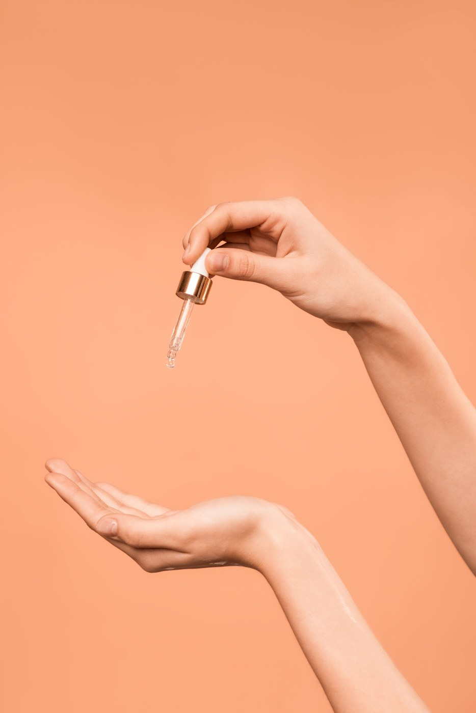

Láser de diodo Atenea · SFS
Sistema de barrido en movimiento a alta frecuencia y baja fluencia: sesiones más rápidas y con mejor tolerancia, también en zonas amplias.
DiodoEn Qualyderm te proponemos las mejores técnicas para garantizarte los mejores resultados. La depilación láser es la técnica más utilizada para la eliminación del pelo: su objetivo es eliminar el folículo piloso sin dañar el tejido circundante. Contamos con un láser de diodo Atenea con sistema SFS y un láser IPL de última generación con sistema SHR, únicos para tratar problemas de hirsutismo o foliculitis. Además, tienen función antiséptica, ayudando a eliminar infecciones del folículo, y permiten tratar el vello en fototipos altos, pieles bronceadas u oscuras y casi cualquier tipo de vello, en cualquier época del año.
La combinación de láser de diodo y luz pulsada nos permite elegir en cada sesión los parámetros según tu fototipo, la zona y el tipo de vello. El objetivo es reducir el folículo piloso cuidando el tejido de alrededor.
Sistema de barrido en movimiento a alta frecuencia y baja fluencia: sesiones más rápidas y con mejor tolerancia, también en zonas amplias.
DiodoTecnología SHR de calentamiento gradual del folículo, cómoda y útil para complementar el diodo según el caso.
IPL
Antes de la primera sesión valoramos tu piel y tu vello y hacemos una prueba en zona pequeña. Sin coste y sin compromiso.
GratuitoComprobamos cómo responde tu piel y te explicamos el plan completo — número de sesiones, zonas y cuidados — antes de que decidas nada.